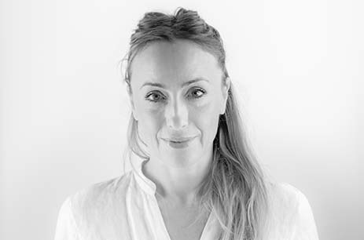
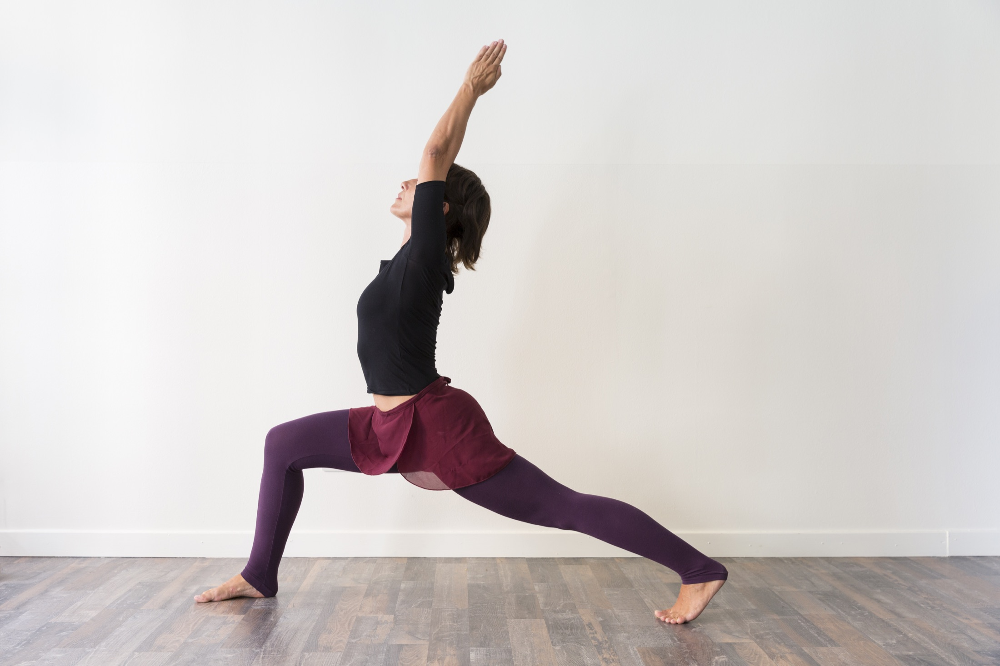
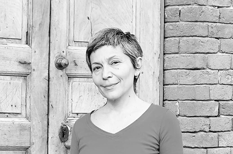
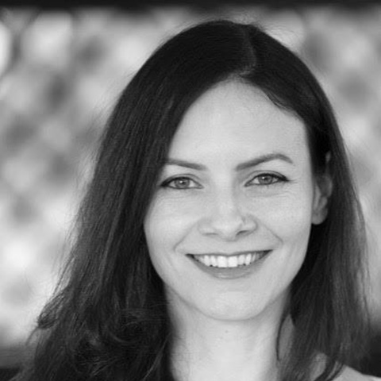
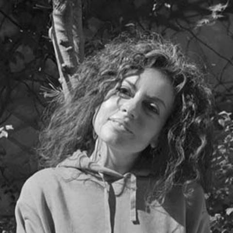
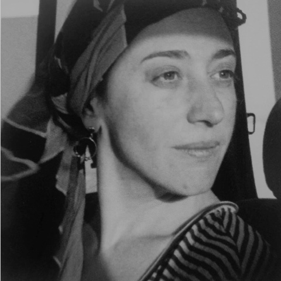
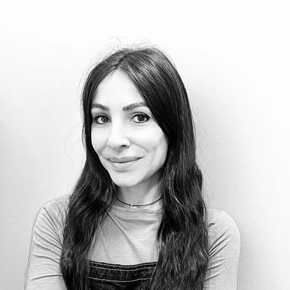

Co-fondatrice
Emanuela Passerini
Educatrice del movimento somatico, danzatrice, formatrice e Teacher di Body-Mind Centering®. Insegna Pilates, Dainami® e Gyrotonic® da oltre vent’anni e forma professionisti del movimento.
Studio Bhumi · Milano Isola
Bhumi è uno studio indipendente dedicato al movimento consapevole. Yoga, danza e pratiche somatiche si incontrano in una ricerca che parte dall’ascolto del corpo e del respiro.

Lo studio
Bhumi riunisce pratiche diverse con un filo comune: attenzione al respiro, ascolto del corpo e qualità del movimento. Pilates, Gyrotonic®, Yoga, Dainami® e Body-Mind Centering® sono strade diverse, scelte in base alla persona.
Le lezioni sono individuali o in piccoli gruppi. Anche quando si condivide lo spazio, ciascuno segue una proposta adatta al proprio corpo, e le lezioni si prenotano in base ai propri impegni.
Precisione, controllo e sostegno, a corpo libero e con i grandi attrezzi.
Sequenze circolari e ondulatorie che accompagnano il respiro.
Asana, respirazione e ascolto per esplorare equilibrio e presenza.
Una pratica dinamica in cui respiro e movimento si incontrano.
Corpo e percezione esplorati con movimento, tocco e anatomia.

Co-fondatrice
Educatrice del movimento somatico, danzatrice, formatrice e Teacher di Body-Mind Centering®. Insegna Pilates, Dainami® e Gyrotonic® da oltre vent’anni e forma professionisti del movimento.

Co-fondatrice
Insegnante certificata Dainami®, diplomata in Hatha Yoga ed educatrice del movimento somatico. Nel suo insegnamento si incontrano danza, arti marziali e anatomia esperienziale.

Pilates, con l’esperienza del teatro e del Feldenkrais.

Pilates, danza contemporanea e pratiche somatiche.

Hatha Yoga, tra respiro, danza e Body-Mind Centering®.

Pilates Matwork, grandi attrezzi e rilascio miofasciale.
Il punto di partenza è sempre la persona, con la propria esperienza. Raccontaci da dove vuoi cominciare.
Parliamone ↗︎